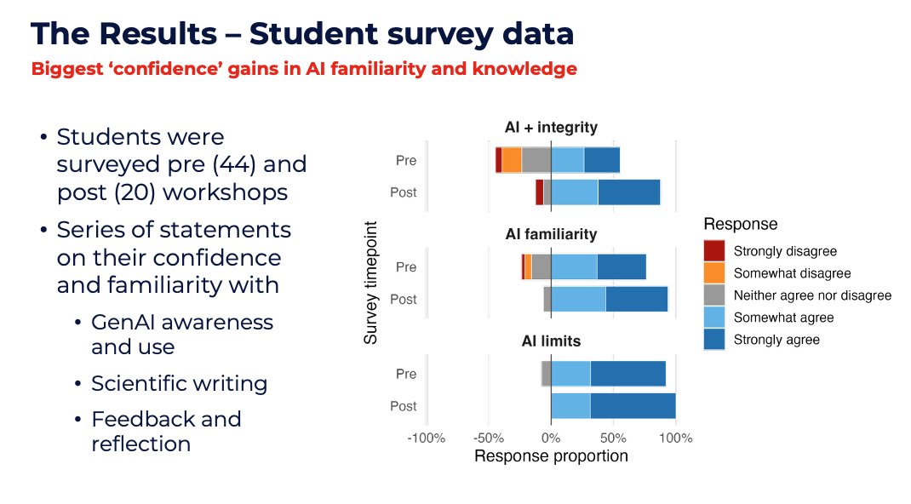
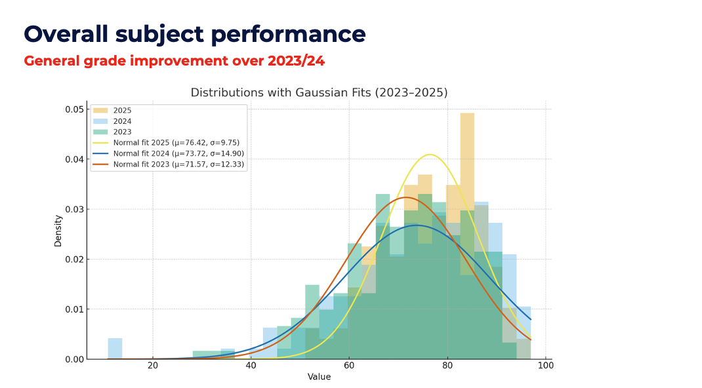

Qualifier 4: Design Scaffolded Assessments That Foster Progressive Learning
Qualifier 4 · Scaffolded Assessment
My approach to assessment is grounded in the principle that assessment should both evaluate learning and actively support it. I design assessment tasks that reflect authentic scientific practice, requiring students to analyse data, interpret results, and communicate findings clearly. In subjects such as BIOL340 and CHEM325/BIOL984, this involves moving beyond recall-based tasks toward assessments that mirror real-world biological workflows — including data analysis, visualisation, and scientific writing.
Theoretical basis: Constructive Alignment and Cognitive load theory
My assessment design is guided by a combination of Constructive Alignment (Biggs & Tang, 2011), ensuring that tasks are directly linked to intended learning outcomes and supported by teaching activities and Cognitive Load Theory (Sweller, 1988), whereby discrete types of learning are separated to reduce cognitive overload and promote better student outcomes. In BIOL340, this is exemplified through a staged assessment structure that aligns with the progression from experimental work to computational analysis and interpretation. Students are required to engage with authentic datasets and produce outputs that reflect real scientific practice, ensuring coherence between what is taught, what is practiced, and what is assessed. Similar is exemplified in my redesign of the CHEM325 bioinformatics assessment where students will engage with a real data set in class, and in-turn their results form the basis of their scientific report assessment.
The Multi-Stage Assessment Model
A key innovation in my assessment practice has been the development of a multi-stage assessment model, informed by my Learning and Teaching grant project for BIOL340 and aligned with institutional priorities around authentic assessment and academic integrity.
In this model, students first complete a series of practicals which are assessed through immediate post-laboratory quizzes which assess the immediate skills utilised in the practical. Following from this the student synthesise the results obtained across all practicals through a peer-reviewed scientific report, requiring them to formally analyse data and communicate findings in a scientific format. This then culminates in a generative AI reflection task, where students critically evaluate feedback on their report and engage with AI tools to assist in their revision and editing process (see CPD qualifier 2 for an example of the reflection task Pro Forma).
This staged design serves several pedagogical purposes:
Separation of skill domains — Separating the development of scientific communication skills from reflective and evaluative thinking reduces cognitive overload and allows students to focus on distinct learning objectives at each stage.
AI literacy and ethical awareness — Explicitly embedding AI literacy and ethical awareness into the curriculum ensures that students are not only using emerging tools, but critically engaging with their limitations and implications.
Iterative feedback — Creating opportunities for iterative feedback allows students to reflect on and improve their work across stages, rather than receiving feedback only at the end of the process.
These assessment are delivered via a customized feedback fruits workflow. Feedback fruits is an online interactive digital platform that navigates the student through submitting their assessment, providing feedback guided by a rubric, and then reflecting on the feedback the recieve.
Evidence: Example Feedback fruit workflow.
Student Evaluation Data
We asked students in Biol340 evaluation data indicates strong performance in areas relating to clarity of assessment expectations, with mean scores typically above 5.5/6.0, suggesting that students understand what is required and how their work will be evaluated.
Furthermore, we separately surveyed students before and after the practicals and Generative AI embedded assessment and were able to utilise this data to determine improvements in student understanding of maintaining academic integrity while using AI, how to use tools effectively and the limitations of generative AI for scientific writing. See an excerpt of a presenation on AI and education delivered at ACSME 2025 demonstrating these results below (Figure 6). Importantly this assessment reform did not have negative affects on the overall performance of the students, instead leading to slight improvements in the cohort as a whole (Figure 6)


Figure 6: Student evaluation scores relating to clarity of assessment expectations.
Responding to Feedback
Evaluation data highlights feedback as an area for continued development, particularly in relation to timeliness and perceived usefulness (approximately 5.2–5.5/6.0). In response, I have implemented several changes:
- Introducing formative checkpoints within practical sequences
- Providing clear marking criteria and annotated exemplars
- Refining email systems by utilising a subject and email and templates to more rapidly respond to student concerns.
- Doing weekly check-ins via a moodle embedded student FAQ discussion board.
- Increasing in-class, verbal feedback during practical sessions
These changes mean that feedback is integrated throughout the learning process rather than occurring solely at the end.
Evidence: Assessment design documents, marking rubrics, and the L&T grant application are available in the evidence folder.
Alignment with UOW Framework and Policy
My teaching and curriculum development are grounded in UOW’s Standards and Quality Framework, Assessment and Feedback Policy, Subject Delivery Policy, and Code of Practice – Learning and Teaching. I approach these not as compliance requirements but as a practical scaffold for design decisions, using them to ensure that my choices serve both institutional standards and genuine student learning. Examples of the alignment between my teaching practice and UOW’s policy and educational frameworks are outlined below.
| Practice | Framework Alignment |
|---|---|
| Constructive alignment of learning outcomes, activities, and assessment in BIOL340 | Assessment and Feedback Policy 6: assessment tasks designed in accordance with Course Design Procedures and directly linked to subject and course learning outcomes. Standards and Quality Framework Design Standard 7.4: learning activities, resources, and assessment are aligned to enable effective achievement of learning outcomes. |
| Multi-stage assessment model (peer-reviewed scientific report → GenAI reflection task) | Assessment and Feedback Policy 17-20: supports the ethical, transparent, and critically engaged use of GenAI in assessment. Standards and Quality Framework Design Standard 10.1: criterion-based assessment appropriate to subject learning outcomes. |
| Explicit rubrics and detailed task descriptors | Assessment and Feedback Policy 8: explicit performance standards set out in a rubric made available to students when the task is set. Subject Delivery Policy: assessment information consistent across all sources and communicated in the Subject Outline |
| Formative checkpoints, in-class verbal feedback, and staged workflows enabling action on feedback | Assessment and Feedback Policy 10-12: constructive and timely feedback; tasks scheduled to allow students to put feedback into practice. Standards and Quality Framework Delivery Standard 9.2: teaching staff provide helpful and timely feedback on performance |
| UDL-informed design scaffolding diverse prior experience in coding and quantitative analysis | Assessment and Feedback Policy 22: assessment tasks designed to be accessible and inclusive in accordance with UDL principles. Standards and Quality Framework Support Standard 9.2: UOW provides an inclusive teaching environment. Code of Practice - Learning and Teaching 9 (teaching staff responsibilities): learning experiences offer variation and choice to support diverse cohorts and promote an inclusive learning environment. |
| Student evaluation data used iteratively to refine assessment design and feedback practice | Standards and Quality Framework Performance Standard 1: UOW collects and acts on student feedback to improve learning experience. |
Previous: Qualifier 3 — Learning Pathways · Next: Qualifier 5 — Scholarship of T&L